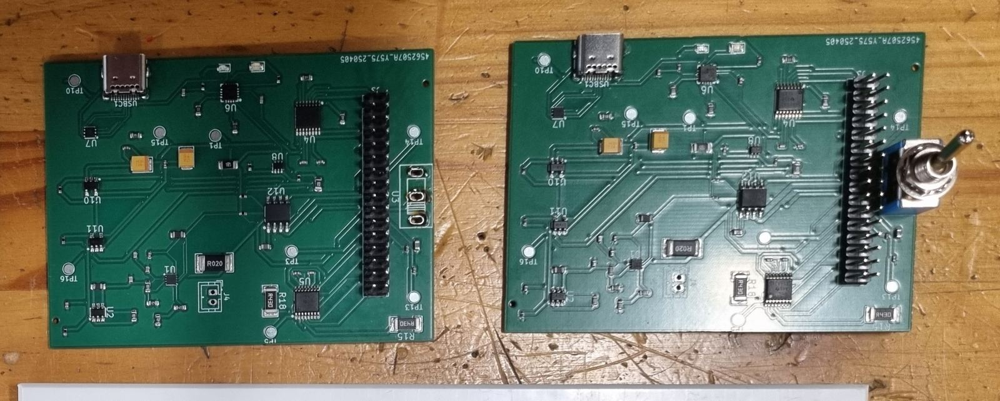

Design Principles — Power Subsystem PCB
Working in a group, we designed the full power subsystem for a mobile robot (the “MM”) in KiCad — and this project was really where our KiCad skills went from “can place a component” to properly understanding what good PCB design demands. Trace widths mattered: the higher-current pathways needed noticeably wider copper to handle the load without overheating, which meant thinking in amps, not just connections.
My part of the board handled the motors, the ON/OFF switch, and the external load switching — driving four motors bidirectionally, cutting standby current below 30 µA when off, and still delivering the robot's full peak current on demand when on.
The hardest part wasn't the design itself, though — it was the debugging. You can design a PCB fully convinced it'll work first time, and then reality has other plans. This project taught me to design with backup plans built in from the start: modular sections, the ability to cut a trace and reroute it, and components placed so they could actually be swapped out when (not if) something didn't behave the way the datasheet promised.